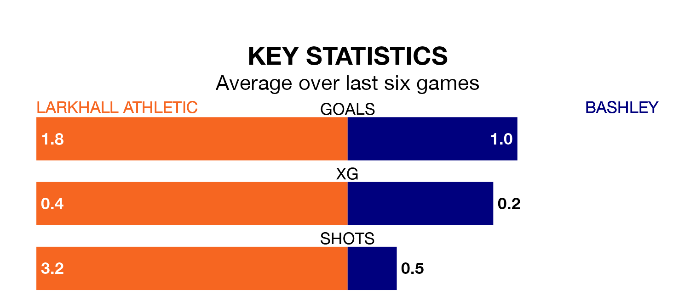

Bashley come to the Plain Ham Ground to play Larkhall Athletic on late Wednesday in terrible form, having collected just two points from their last six games.
The visitors have drawn two and lost four of their last six fixtures, while Larkhall have two wins and a draw.
Bashley are 18th in the table after 19 games, of which they have won four and drawn six, earning 18 points.
Larkhall are six places ahead of the visitors in 12th, with seven wins and five draws putting them on 26 points.
With 22 goals in 19 games so far this season, Bashley are the league's second-lowest scorers with 1.2 goals per game. And they are conceding more than average, letting in 36 goals at a rate of 1.9 per game.
Athletic, meanwhile, are above average scorers, with 1.9 goals per game, compared to a league average of 1.7. They have conceded 1.6 goals per game.
Over the last two years, Larkhall and Bashley have played each other twice. Bashley won one of them and they drew the other.
Their last meeting was on February 4, when they played out a 1-1 draw.
Larkhall's last match was on Saturday, a 5-1 win against Melksham Town.
Bashley lost 2-1 against Frome Town last time out, also on Saturday.
Updated: 13:20 (UTC), 29/01/24